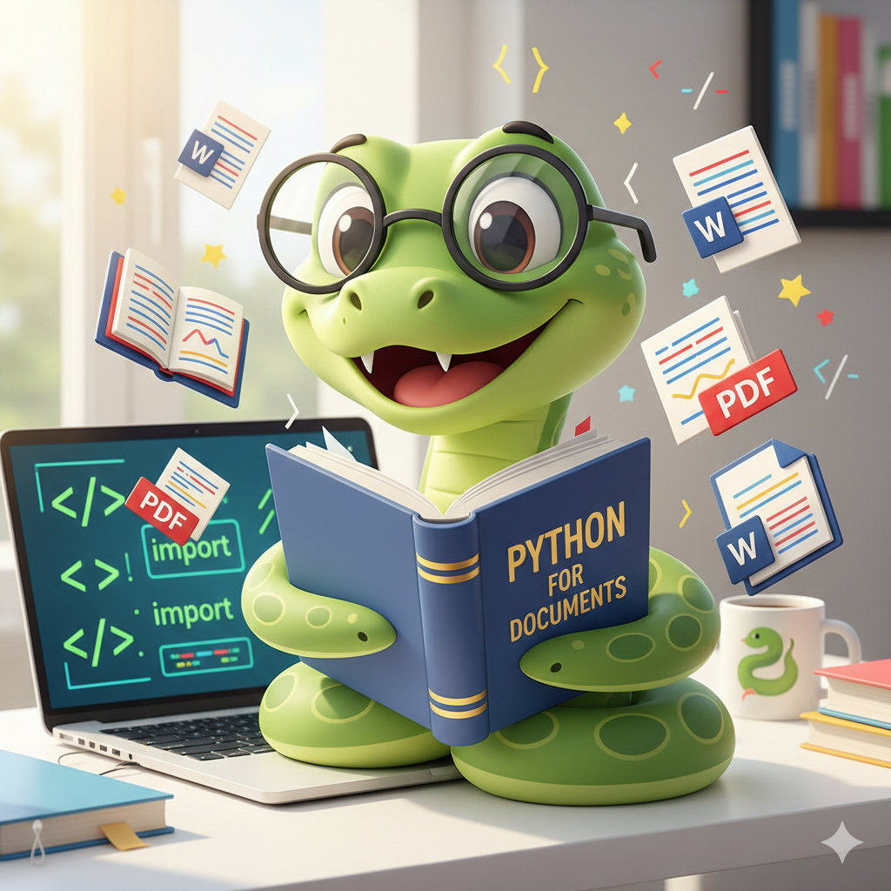

import docx
# Create a new document
document = docx.Document()
# Add a heading
document.add_heading('My Automated Report', 0)
# Add a paragraph
document.add_paragraph('This document was created automatically with Python!')
# Save the document
document.save(r'C:\Users\steve\Documents\GitHub\steveondata\posts\2025-09-24\my_report.docx')Author’s Note: As I write this series, I’m learning these concepts alongside you! If you spot any mistakes or have suggestions for improvement, please let me know. Programming is a journey of continuous learning, and I’m always looking to make these tutorials clearer and more helpful for fellow beginners.
Key Insight: Python makes document automation incredibly easy with just a few lines of code. Perfect for beginners just like me who want to automate boring tasks!
Working with PDF and Word documents in Python opens up a world of automation possibilities for beginner programmers. Whether you need to extract text from dozens of PDF files (like I need t) or automatically generate Word reports, Python provides simple, powerful tools to handle these tasks efficiently.
What Can You Accomplish?
With Python’s document manipulation capabilities, you can:
- 📄 Extract text from PDF files (like meeting minutes or reports)
- 🔗 Combine multiple PDF files into one document
- 🔄 Rotate pages that were scanned sideways
- 📝 Create new Word documents automatically
- ✏️ Read and modify existing Word files
- 🔒 Handle password-protected PDFs
Getting Started: Installing the Libraries
Before diving into code, you’ll need to install two essential libraries. Open your command prompt or terminal and type:
pip install PyPDF2==1.26.0
pip install python-docxWorking with PDF Files Using PyPDF2
Reading Text from a PDF
Let’s start with the most common task - extracting text from a PDF :
import PyPDF2
import os
# Get current working directory
print("Current Working Directory:", os.getcwd())
# Open the PDF file in binary read mode
pdfFileObj = open('some_pdf.pdf', 'rb')
pdfReader = PyPDF2.PdfFileReader(pdfFileObj)
# Get the first page (Python counts from 0)
pageObj = pdfReader.getPage(0)
# Extract the text
text = pageObj.extractText()
print(text)
# Always close the file
pdfFileObj.close()What’s happening here?
'rb'means “read binary” - PDFs aren’t text files, so we need binary modegetPage(0)gets the first page (remember, Python starts counting at 0)extractText()pulls out all the text from that page as a string
Checking PDF Information
Want to know how many pages are in a PDF? Here’s how:
import PyPDF2
pdfFileObj = open('some_pdf.pdf', 'rb')
pdfReader = PyPDF2.PdfFileReader(pdfFileObj)
print(f"Number of pages: {pdfReader.numPages}")
pdfFileObj.close()Combining Multiple PDFs
Need to merge several PDF files? This is perfect for combining monthly reports :
import PyPDF2
# Open both PDF files
pdf1File = open('january_report.pdf', 'rb')
pdf2File = open('february_report.pdf', 'rb')
# Create readers for each file
pdf1Reader = PyPDF2.PdfFileReader(pdf1File)
pdf2Reader = PyPDF2.PdfFileReader(pdf2File)
# Create a writer to build the new PDF
pdfWriter = PyPDF2.PdfFileWriter()
# Add all pages from first PDF
for pageNum in range(pdf1Reader.numPages):
pageObj = pdf1Reader.getPage(pageNum)
pdfWriter.addPage(pageObj)
# Add all pages from second PDF
for pageNum in range(pdf2Reader.numPages):
pageObj = pdf2Reader.getPage(pageNum)
pdfWriter.addPage(pageObj)
# Save the combined PDF
pdfOutputFile = open('combined_reports.pdf', 'wb')
pdfWriter.write(pdfOutputFile)
pdfOutputFile.close()
pdf1File.close()
pdf2File.close()Working with Word Documents Using python-docx
Creating a New Word Document
Creating Word documents from scratch is surprisingly simple :
What’s happening here?
Document()creates a blank Word documentadd_heading('text', 0)adds a title (0 is the biggest heading size)add_paragraph('text')adds regular textsave('filename.docx')writes the document to your computer
Reading an Existing Word Document
Need to extract text from a Word document? Here’s how :
import docx
# Open an existing document
doc = docx.Document(r'C:\Users\steve\Documents\GitHub\steveondata\posts\2025-09-24\my_report.docx')
# Print each paragraph
for para in doc.paragraphs:
print(para.text)My Automated Report
This document was created automatically with Python!This code opens a Word document and prints out each paragraph, one by one.
Adding Content to an Existing Document
You can also modify existing documents:
from docx import Document
# Open the template
doc = Document(r'C:/Users/steve/Documents/GitHub/steveondata/posts/2025-09-24/my_report.docx')
# Add new content
doc.add_paragraph('New agenda item added automatically.')
# Save with a new name
doc.save(r'C:/Users/steve/Documents/GitHub/steveondata/posts/2025-09-24/updated_my_report.docx')Practical Real-World Applications
| Use Case | Example | Benefit |
|---|---|---|
| Students | Extract text from research PDFs for note-taking | Save hours of manual copying |
| Office Workers | Combine weekly reports into monthly summaries | Eliminate repetitive tasks |
| Small Businesses | Automatically generate invoices or contracts | Reduce manual errors |
| Researchers | Process large collections of documents | Analyze data at scale |
Your Turn! Practice Exercise
Challenge: Create a Python script that:
- Opens a Word document
- Adds today’s date as a heading
- Adds a paragraph with your name
- Saves it as a new file
Click here for Solution!
from docx import Document
from datetime import date
# Create new document
doc = Document()
# Add today's date as heading
today = date.today()
doc.add_heading(f'Report for {today}', 0)
# Add paragraph with name
doc.add_paragraph('Created by: [Your Name Here]')
# Save the document
doc.save(f'C:/Users/steve/Documents/GitHub/steveondata/posts/2025-09-24/daily_report_{today}.docx')
print("Document created successfully!")Document created successfully!Key Takeaways
Quick Reference Points:
- Use PyPDF2 for reading and manipulating PDF files
- Use python-docx for creating and editing Word documents
- Always open PDFs in binary mode (
'rb') - Remember Python uses zero-based indexing (first page is 0)
- Close files after opening them to free up memory
- These tools are perfect for automating repetitive tasks
What’s Next?
Try these examples with your own PDF and Word files. Start small - maybe extract text from a single PDF or create a simple Word document. Once you’re comfortable, you can combine these techniques to build powerful document automation tools.
The beauty of working with PDF and Word documents in Python is that once you master these basics, you can automate almost any document-related task!
References
- Automate the Boring Stuff with Python, Chapter 15: Working with PDF and Word Documents
- python-docx Official Documentation
- PyPDF2 Documentation
- Automate the Boring Stuff with Python - Main Site
- Installing Third-Party Modules Guide
Happy Coding! 🚀

You can connect with me at any one of the below:
Telegram Channel here: https://t.me/steveondata
LinkedIn Network here: https://www.linkedin.com/in/spsanderson/
Mastadon Social here: https://mstdn.social/@stevensanderson
RStats Network here: https://rstats.me/@spsanderson
GitHub Network here: https://github.com/spsanderson
Bluesky Network here: https://bsky.app/profile/spsanderson.com
My Book: Extending Excel with Python and R here: https://packt.link/oTyZJ
You.com Referral Link: https://you.com/join/EHSLDTL6